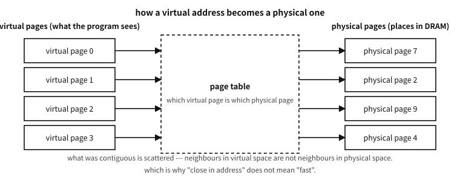

12 Memory divides — registers, caches, a ladder of layers
What to know first
Looking back
Chapter 2 said “the CPU fetches the next thing to do from memory and does it.” So does the calculation itself happen in memory — does the sum of slot 100 and slot 104 go straight into slot 108?
A. No — and that question opens this chapter. A CPU does not calculate directly in memory. Calculation happens in a separate space inside the CPU. That space was not drawn in chapter 2’s picture at all. Now it is time to be honest.
The need for this chapter, and its context
By the end of this chapter
The questions this chapter answers
- If they are that important, why are there only a few dozen? Why not make plenty?
- Can’t a programmer control the cache directly — an instruction like “keep this in L1”?
- Then isn’t the wide gap between stack and heap in chapter 45’s “layout of memory” a waste?
12.1 A confession — the CPU-memory-clock picture was too simple#
The CPU-memory-clock model of chapter 2 is excellent as a first step of learning, but for today’s computers it is excessively simplified. To what degree? If that picture were accurate, today’s CPU would spend most of its time waiting blankly. Clocks got thousands of times faster over half a century while memory did not keep up. And yet real computers do not sit blank. What machinery stepped into the gap is the story of this chapter and the next. First, let us fill in the registers, which were missing from the picture from the start.
12.2 Registers — the CPU’s own hand, there all along#
Inside the CPU are small storage places called registers. They were there from the beginning — chapter 2’s picture merely omitted them. They number only a few dozen and each is one word in size (chapter 3). In exchange their speed is immediate: read and written within the beat of the clock. Call them coins held in the hand — nearer than the pocket (memory), and taking no time to pull out.
The important point is this. All calculation happens in registers. To add two numbers you first bring them from memory into registers (load), add register to register, and send the result back to memory (store). The real route of a calculation that looks like “slot 100 + slot 104” is always [memory → register → calculate → memory].
Q. If they are that important, why are there only a few dozen? Why not make plenty?
A. Because fast and many are a trade-off. Registers are immediate because they sit right beside the CPU’s calculation circuits, built in the most expensive way. Increase the number and the distance grows and selection time is added, so “immediate” collapses. The design therefore settled on “a little of something very fast” — and this trade-off is the principle that governs the whole chapter: the faster the memory the smaller it is, and the larger the memory the slower.
C’s syntax still carries a trace of registers. C has a keyword register — a request from the old days that “this variable be kept in a register if possible.” Today compilers place things far better than people do, so the request has become decoration; but the question of who puts a variable in a register and when it goes back to memory is very much alive, and becomes the core material of chapter 14 (compiler optimisation).
12.3 The widening gap — between register and memory#
Stand the two kinds of memory side by side and the picture sharpens.
- Registers: a few dozen × one word. Immediate.
- Memory (DRAM): tens of billions of slots. On today’s CPUs the answer comes back after hundreds of clock beats.
It was not always so. When C was born (chapter 2) the strides of CPU and memory roughly matched. Over the following decades the CPU’s clock accelerated headlong while memory evolved towards capacity and did not keep pace. The gap widened year by year to hundreds of times — the relation of a coin in the hand to a warehouse an hour’s round trip away. If calculation is immediate but fetching the material takes hundreds of beats, the machine spends longer waiting than working.
A common misconception. “Memory access costs the same wherever you read”
12.4 The cache — a middle layer wedged into the gap#
Engineering’s answer to a gap of hundreds of times was the cache. The idea is exactly the trick of someone working in a library. If the round trip to the stacks (memory) is slow — leave the book you just fetched on your desk for a while. When you want it again and it is on the desk (a hit) it is immediate; when it is not (a miss) only then do you make the trip to the stacks.
This works because of programs’ habits. Programs do not touch memory at random — they touch again soon what they just touched (temporal locality) and go on to touch the neighbours of what they touched (spatial locality). Think of a loop touching the same variable repeatedly, and of an array being scanned from the front. Thanks to these habits, a single small desk removes most of the trips to the stacks.
There is one more trick that exploits spatial locality. The cache does not fetch things from memory one slot at a time. It carries the requested slot along with its neighbours — today usually 64 bytes, sixty-four lockers as one box — in a single trip. This unit of carriage is the cache line. It is why scanning an array in order costs one trip to the stacks at the first slot and the next sixty-three are free, and conversely why a program that touches places far apart is slow, carrying a new box every time. This “box” returns in the next chapter as the protagonist of an unexpected accident (false sharing).
12.5 The cache divides — a ladder of layers#
The same trade-off as with registers applies to caches — to be fast is to be small, to be large is to be slow. So the cache too divided into layers: the small, fastest L1 right beside the CPU, the intermediate L2 behind it, the large and relatively slow L3 shared by several cores — and beyond that, memory. The rough feel in numbers is as follows (it differs by machine).
| layer | order of size | rough wait | metaphor |
|---|---|---|---|
| register | a few dozen | 0 (immediate) | coins in the hand |
| L1 cache | tens of KiB | a few beats | on the desk |
| L2 cache | hundreds of KiB–MiB | a dozen-odd beats | the bookshelf |
| L3 cache | a few–tens of MiB | tens of beats | stacks on this floor |
| memory (DRAM) | tens of GiB | hundreds of beats | the warehouse |
Table 12.1 — The memory ladder — size and latency by tier
There is one way to read it — each step down is a large slowdown. Memory is not “one lump” but this whole ladder, and a program’s speed is determined in large part by “on which rung of the ladder the thing you need is found.”
In practice. Same work, several times the time — scanning a two-dimensional table
Q. Can’t a programmer control the cache directly — an instruction like “keep this in L1”?
A. In general, no. The cache is run automatically by hardware, and C has no standard syntax for touching it directly. What the programmer does is not control but cooperation — keeping data together with its neighbours and touching it in order. The code of someone who knows memory is a ladder naturally comes out that way. And that alone produces the several-fold difference we just saw.
12.6 Measuring the cache — same number of reads, different order#
So far the cache has only been a picture. Now we ask the machine directly.
The experiment is simple. Keep the number of reads identical and change only the order. One loop walks the array front to back; the other follows a random cycle through scattered places. The instruction count and the number of values read are the same.
examples-en/memory-ladder/order.c
/* The same number of reads, in a different order --- ask the machine about the gap.
* This example measures time, so its numbers differ by machine and by run.
No absolute times are printed, only the *ratio*. The conclusion is what lasts. */
#include <stdio.h>
#include <stdlib.h>
#include <stdint.h>
#include <time.h>
#define N (4u << 20) /* 4M elements = 16 MiB --- larger than the cache */
#define TOUCH 1500000 /* both ways read exactly this many values */
#define ROUNDS 3
static uint32_t *next_index; /* the cycle used for scattered traversal */
static uint32_t *data;
static volatile uint64_t sink;
static uint64_t rng = 0x2545F4914F6CDD1DULL;
static uint32_t rnd(void)
{ rng ^= rng << 13; rng ^= rng >> 7; rng ^= rng << 17; return (uint32_t)(rng >> 32); }
static double order_in_order(void) /* read in order */
{
clock_t t0 = clock();
uint64_t acc = 0;
for (uint32_t i = 0; i < TOUCH; i++) acc += data[i % N];
clock_t t1 = clock();
sink = acc;
return (double)(t1 - t0);
}
static double order_scattered(void) /* read scattered places (same count) */
{
clock_t t0 = clock();
uint64_t acc = 0;
uint32_t p = 0;
for (uint32_t i = 0; i < TOUCH; i++) { acc += data[p]; p = next_index[p]; }
clock_t t1 = clock();
sink = acc;
return (double)(t1 - t0);
}
static int cmp(const void *a, const void *b)
{ double x = *(const double *)a, y = *(const double *)b; return (x > y) - (x < y); }
int main(void)
{
data = malloc((size_t)N * sizeof *data);
next_index = malloc((size_t)N * sizeof *next_index);
if (!data || !next_index) { puts("out of memory"); return 1; }
for (uint32_t i = 0; i < N; i++) { data[i] = i; next_index[i] = i; }
/* build one cycle through the whole array so the machine cannot guess ahead */
for (uint32_t i = N - 1; i > 0; i--) {
uint32_t j = rnd() % i;
uint32_t t = next_index[i]; next_index[i] = next_index[j]; next_index[j] = t;
}
double a[ROUNDS], b[ROUNDS];
order_in_order(); order_scattered(); /* warm-up --- the first round is discarded */
for (int r = 0; r < ROUNDS; r++) { a[r] = order_in_order(); b[r] = order_scattered(); }
qsort(a, ROUNDS, sizeof *a, cmp);
qsort(b, ROUNDS, sizeof *b, cmp);
double in_order = a[ROUNDS / 2], scattered = b[ROUNDS / 2]; /* median */
printf("reading %u values, %u times each\n\n", N, TOUCH);
puts("both loops read the same number of values;");
puts("only the order of the addresses differs.\n");
if (in_order > 0.0)
printf("scattered order took %.1f times as long as sequential order\n",
scattered / in_order);
else
puts("the clock is too coarse on this machine to tell them apart");
puts("\n(no absolute times are printed: they differ by machine and by run.");
puts(" what stays is the ratio, and the reason for it.)");
free(next_index); free(data);
return 0;
}
Output
reading 4194304 values, 1500000 times each
both loops read the same number of values;
only the order of the addresses differs.
scattered order took 47.0 times as long as sequential order
(no absolute times are printed: they differ by machine and by run.
what stays is the ratio, and the reason for it.)
★ This is the first example in the book that measures time. So one rule comes with it: no absolute times are printed, only ratios. Change the machine and the nanoseconds change, but “scattered reading is tens of times slower” survives. Running several rounds and taking the middle value is for the same reason.
The gap is not a few times but tens of times. Since the number of reads is the same, the instruction count cannot explain it; only where the data is can.
Then why is reading in order so fast? The cache fetches a whole cache line at a time (usually 64 bytes), so reading in order uses every neighbour in that line right afterwards: one fetch settles several reads. And seeing addresses rise regularly, the machine fetches the next line before it is asked. Neither helps scattered access.
A common misconception. Data in the cache is fast; data that overflows it is slow
12.7 Another ladder — virtual memory#
The ladder so far was a ladder of speed. But there is one more layer between a program and DRAM, and its work is not speed: it is translating the numbers themselves.
We are back where chapter 3 asked “is the locker number a real address?”. The addresses today’s programs handle are virtual addresses, and the hardware that turns them into the real physical addresses of DRAM is the MMU (Memory Management Unit) inside the CPU.
12.7.1 From segments to paging#
The early answer to mapping a program’s addresses onto real memory was the segment: hold a program’s memory as one lump and manage it as “start address plus length”. Simple, but with a problem — put lumps of assorted sizes in and out and unusable gaps appear between them (external fragmentation). The 8086’s segment:offset is a trace of that lineage.
Today’s answer is paging. Memory is cut into pieces of one size — usually 4 KiB — and such a piece is called a page. The virtual address space is cut the same way, and the two are paired page by page. Since the pieces are all the same size any free slot will take any page, and external fragmentation disappears. In exchange a correspondence table is needed: the page table.

Figure 12.1 — Virtual pages are paired with physical ones through the page table. Pages contiguous in virtual addresses are scattered in physical memory — that one fact is what this figure carries.
x86-64 stacks that table four deep (five on recent parts). A 48-bit address is split into four nine-bit pieces and a twelve-bit offset; the walk descends through the tables and arrives at a physical page number. Which also means four memory reads for one translation.
12.7.2 The TLB — the translation gets a cache too#
If reading memory once required reading tables four times, nothing would be gained. So the MMU keeps recent translations in a small cache — the TLB (Translation Lookaside Buffer). It holds from tens to a few thousand entries, and on a hit the translation is effectively free.
Here we meet the locality of the cache section again. Locality is good not only for the cache but for the translation. While the work stays inside one page (4 KiB) a single TLB entry suffices; jump about widely scattered addresses and TLB misses follow, each paying for a walk of the tables. That is why programs handling large data use huge pages (2 MiB, 1 GiB) — the same amount of memory covered by far fewer entries.
12.7.3 Page faults, and lazy memory#
A page table entry can be marked “this page is not in physical memory now”. Touch such a page and the CPU raises a page fault and hands it to the operating system, which fills in what is needed and lets the instruction run again. That one mechanism makes several things possible.
- Demand paging. An executable is not read whole; only the pages actually executed are fetched as they are reached. This is why programs start quickly.
- Swapping. Pages long unused are pushed out to disk and fetched back later.
- Copy-on-write.
forkcopies only the page tables rather than the memory, and a page is really copied only when someone tries to write to it. - Lazy allocation. When
mallochands over a large block, physical memory is not attached yet; the first touch raises a page fault and attaches it then (we meet this again in chapter 46).
12.7.4 Protection — why a null dereference usually dies at once#
Each page carries permission bits: read, write, execute. Three things follow.
- Programs cannot touch one another’s memory (chapter 10’s isolation is implemented right here).
- The code region is read and execute only, the data region read and write only — which blocks attacks that execute data as code (W^X).
- The pages around address zero are not mapped at all. So following a null pointer makes the hardware raise a page fault on the spot and the operating system kills the program. This is the real implementation of chapter 4’s practice of “leaving address zero empty”.
Q. Then isn’t the wide gap between stack and heap in chapter 45’s “layout of memory” a waste?
A. No — because virtual address space is close to free. A region with no mapping in the page table uses not one byte of physical memory. That is why today’s programs place the stack and the heap far apart and let them grow freely. When chapter 45’s demonstration shows terabytes between stack and heap, it does not mean that much memory is in use: it means that many numbers have been left between them.
A common misconception. “If a program takes a lot of memory, that much RAM is gone”
malloc(1 GiB) can succeed with RAM usage almost unchanged, and conversely sweeping through that whole region is when RAM disappears. This is why VIRT and RES differ so widely in Linux’s top — the first is numbers reserved, the second pages actually attached.Platform note. The world without virtual memory or an MMU
What a C programmer should take from the virtual-memory layer is three sentences. Numbers are translated. The translation has a cache too, and locality helps it. And all of this is a matter of the implementation, not a promise of the standard — the standard mentions neither pages, nor swapping, nor even an operating system.
The first half of the repair is done — memory is not one thing but a ladder from register to warehouse. But that is only half. The CPU was not content with reducing waiting; it also evolved towards overlapping execution itself — stacking instructions like an assembly line, guessing in advance which way a branch will go, and finally increasing the number of workers (cores). That story, and how C came to write its first contract (C89) in the middle of that turmoil, is the next chapter.